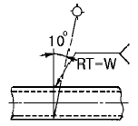
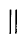
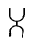
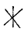
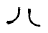

침투비파괴검사산업기사(구) (2003-05-25 기출문제)
1과목: 침투탐상시험원리
1. 침투탐상시험의 기본은 어떤 원리를 이용한 것인가?
- 광전효과
- 보일의 법칙
- 모세관 현상
- 파스칼의 원리
(정답률: 알수없음)

2. 침투액의 특성을 서술한 것이다. 틀린 것은?
- 접촉각이 작다.
- 점성이 높다.
- 적심성이 양호하다.
- 인화점이 높다.
(정답률: 알수없음)
3. 다음 결함 중에서 침투탐상시험의 대상으로 적당하지 않은 것은?
- 단조품의 표면 결함
- 용접부의 표면하 결함
- 주조품의 열간터짐
- 강자성체의 표면흠
(정답률: 알수없음)
4. 침투탐상시험에서는 세척방법에 따라 침투액의 종류를 구별한다. 다음 중 이 방법에 의해 구별된 침투액이 아닌 것은?
- 용제제거성
- 수세성
- 후유화성
- 형광성
(정답률: 알수없음)
5. 다음 중 침투탐상시험으로 검사 가능한 것은?
- 주물의 내부 기공
- 파이프와 튜브의 부식두께
- 철의 탄소 함유량
- 마그네슘 합금의 피로균열
(정답률: 알수없음)
6. 다음 중 미세한 표면균열의 검출신뢰도가 가장 높은 비파괴검사법은?
- 방사선투과검사
- 초음파탐상검사
- 침투탐상검사
- 와전류탐상검사
(정답률: 알수없음)
7. 다른 비파괴검사법과 비교하여 다음 중 침투탐상시험 적용이 유리한 조건이 아닌 것은?
- 비교적 단순한 검사방법이다.
- 어떠한 온도에도 효과적이다.
- 작은 검사물의 표면 검사에 적합하다.
- 표면의 미세한 균열을 찾아내는데 적합하다.
(정답률: 알수없음)
8. 다음 누설검사법중 대형 용기나 저장조에 이용되지만, 누설위치를 측정하는데 적합하지 않은 검사법은?
- 기포누설검사
- 헬륨누설검사
- 할로겐누설검사
- 압력변화누설검사
(정답률: 알수없음)
9. 수세성 형광침투액과 습식현상제를 사용하는 경우의 침투탐상시험의 순서는?
- 전처리→ 건조→ 침투→ 세척→ 현상→ 관찰
- 전처리→ 침투→ 세척→ 건조→ 현상→ 관찰
- 전처리→ 침투→ 세척→ 현상→ 건조→ 관찰
- 전처리→ 침투→ 현상→ 세척→ 건조→ 관찰
(정답률: 알수없음)
10. 침투탐상시험 중 수세법이나 후유화제법에서 시험품의 건조작업시 가장 적당한 온풍의 온도는?
- 80∼120℉
- 120∼185℉
- 40℉ 이하
- 125℉ 이상
(정답률: 알수없음)
11. 다음 중 휴대용 용제제거성 침투탐상제 세트에 포함되지 않는 것은?
- 용제제거제
- 침투제
- 유화제
- 속건식 현상제
(정답률: 알수없음)
12. 세척처리 및 현상법의 차이에 따른 건조처리 여부와 적용시기가 올바른 것은?
- 건식현상법 : 수세법의 경우 세척처리후 건조시킨다.
- 습식현상법 : 수세법의 경우 세척처리후 건조시킨다.
- 무현상법 : 용제세척의 경우 세척처리후 건조시킨다.
- 속건식 현상법 : 용제세척의 경우 세척처리후 건조시킨다.
(정답률: 알수없음)
13. 침투제에 함유된 황(S)이나 염소(Cl)의 함량은 다음 중 어느 재질에 사용상 제한을 두는가?
- 알루미늄(Al)
- 동(Cu)
- 니켈(Ni)
- 마그네슘(Mg)
(정답률: 알수없음)
14. 침투탐상시험시 비교적 넓은 균열은 어떤 모양으로 검출되는가?
- 점선
- 넓고 흐린 선
- 연속적인 선
- 물방울 모양
(정답률: 알수없음)
15. 통기성이 없는 탱크안을 용제제거성 침투탐상제를 써서 작업할 때의 주의사항을 서술한 것으로 알맞는 것은?
- 특히 주의할 필요 사항은 없다.
- 마스크만 사용하면 된다.
- 배기만 하면 좋다.
- 환기를 충분하게 한다.
(정답률: 알수없음)
16. 침투탐상시험에 사용되는 현상제의 종류가 아닌 것은?
- 건식 현상제
- 습식 현상제
- 고점성 현상제
- 속건식 현상제
(정답률: 알수없음)
17. 침투탐상시험용 건식 현상제의 장점은?
- 분사 장치가 간단하다.
- 가격이 저렴하다.
- 분사 방법이 단순하다.
- 습식 현상제 적용후 필요시 재 도포용으로 좋다.
(정답률: 알수없음)
18. 다음은 침투탐상시험에 대한 특성을 설명한 것이다. 틀린 것은?
- 침투탐상시험은 방사선투과시험보다 표면 불연속을 찾아내는데 더 확실하고 빠르며 경제적이다.
- 침투탐상시험은 시험품의 형상,크기에 제한을 받지 않으며 다량 생산품 검사에 적합하다.
- 침투탐상시험은 내부결함 검출을 할 수 없다.
- 침투탐상시험은 와전류탐상시험보다 융통성이 없으며 제품의 형상에 제한 받는다.
(정답률: 알수없음)
19. 후유화제법이 적용될 경우 다음 중 가장 엄격히 지켜져야 할 시간은?
- 침투시간
- 유화시간
- 건조시간
- 현상시간
(정답률: 알수없음)
20. 침투탐상시험의 신뢰성과 관련된 사항 중 재현성의 표준화에 직접 관계가 있는 것은?
- 대비시험편
- 시험체의 크기
- 시험체의 형상
- 침투탐상검사원
(정답률: 알수없음)
2과목: 침투탐상검사
21. 침투탐상시험에서 침투제의 성능 시험방법이 아닌 것은?
- 감도 시험
- 수분함량 시험
- 점성 시험
- 화학적 불활성 시험
(정답률: 알수없음)
22. 사용하던 침투액은 그 성능에 있어 의심이 가는 경우 새로운 침투액과 감도 비교를 해 보아야 한다. 이때 침투액의 감도시험에 대한 사항 중 틀린 것은?
- 알루미늄 시험편을 사용한다.
- 시험편 반쪽엔 사용하던 침투액을 적용하고, 다른 반쪽에는 새 침투액을 적용한다.
- 새로운 침투액과의 비교이므로 침투시간은 각각 다르게 적용해야 한다.
- 사용하던 침투액이 새 침투액보다 감도가 떨어지면 폐기한다.
(정답률: 알수없음)
23. 다음 중 침투탐상시 지시에 영향을 주는 인자가 아닌 것은?
- 시험체의 표면 조건
- 시험체나 침투액의 온도
- 시험체의 크기
- 사용되는 침투물질의 감소
(정답률: 알수없음)
24. 용접 제품에 대한 침투탐상시험을 실시하려고 할 때 틀린 것은?
- 일반 강재의 경우 상온으로 냉각된 후 실시할 수 있다.
- 고장력 강일 경우 8시간 경과 한 후 실시한다.
- 고장력 에칭 및 템퍼링 강재의 경우 2일 이상 경과한 후 실시한다.
- 용접 공정에 따라 용접전, 중, 후의 3단계로 실시 할 수 있다.
(정답률: 알수없음)
25. 용접부에서 크레이터 균열은 흔히 발생되는 결함이다. 이러한 크레이터 균열이 발생되는 위치로 적당하지 않은 것은?
- 용접이 중단되는 부위
- 용접이 시작되는 부위
- 용접이 끝나는 부위
- 용접부의 루트부위
(정답률: 알수없음)
26. 얕고 넓은 표면 결함을 검출하는데 가장 감도가 좋은 침투탐상시험법은?
- 용제제거성 가시 염색침투탐상시험법
- 수세성 형광침투탐상시헙법
- 수세성 가시 염색침투탐상시험법
- 후유화성 형광침투탐상시험법
(정답률: 알수없음)
27. 침투탐상시험후 후처리에 대한 설명이다. 바른 것은?
- 보다 용이하게 제거하기 위해 가능한 한 빨리 행해야한다.
- 탐상제가 건조될수록 제거가 용이하므로 몇시간 경과후에 행해야 한다.
- 침투제의 용해도를 증가시키기 위해 부품을 따뜻하게 한 후 행한다.
- 탐상제의 응집력을 제거하기 위해 부품을 차갑게 한후 시행한다.
(정답률: 알수없음)
28. 용접부에서 발생되는 저온균열의 주 원인이 아닌 것은?
- 열영향부의 조직변화
- 용접부의 확산성 수소
- 용접부에 생긴 응력
- 용융금속의 과다용입
(정답률: 알수없음)
29. 여러 종류의 침투액에 대한 다음 설명 중 옳은 것은?
- 수세성 침투액은 직접 물로 세척할 수 없다.
- 제작처가 다른 침투액을 혼합, 사용해도 무방하다.
- 후유화성 침투액은 물에 녹지 않으므로 물만으로는 세척할 수 없다.
- 수세성 침투액은 가시성 염료만 포함되어 있다.
(정답률: 알수없음)
30. 염색 침투제와 비교하였을 때 형광 침투제의 장점 설명으로 틀린 것은?
- 미세한 균열을 더 쉽게 관찰할 수 있다.
- 대형 검사물의 전면 탐상에 더 적합하다.
- 일반적으로 결함 검출감도가 우수하다.
- 다량의 소형 부품검사에 적합하다.
(정답률: 알수없음)
31. 다음 중 유화제에 필요한 일반적인 요건으로 틀린 것은?
- 후유화성 침투액과 서로 잘 녹아야 한다.
- 유화 및 세척성이 좋아야 한다.
- 침투성이 좋아야 한다.
- 침투액과 서로 다른 색채를 가져야 한다.
(정답률: 알수없음)
32. 플라스틱 제품에 적용할 침투제를 선정할 때 가장 먼저 고려할 사항은?
- 시험체의 전처리 상태
- 시험체와 침투제의 반응성
- 표면 산화제의 제거
- 수세성 형광침투제의 적용 여부
(정답률: 알수없음)
33. 침투탐상시험 대비시험편의 사용 목적이 아닌 것은?
- 탐상제 성능비교
- 침투액의 성능평가
- 탐상조작의 적부점검
- 탐상조건 결정
(정답률: 알수없음)
34. 속건식현상제가 갖추어야할 조건이 아닌 것은?
- 화학적으로 안정되거나 불활성일 것
- 입자에 대해 응집성이 적을 것
- 적용후 점차 확산되는 성질을 가질 것
- 황이나 할로겐함량이 기준값 이하일 것
(정답률: 알수없음)
35. 상온에서 침투탐상시험법으로 세라믹 제품의 균열을 검출하려고 한다. 다음 중 적당한 침투시간은?
- 3분
- 5분
- 10분
- 15분
(정답률: 알수없음)
36. 가장 휴대성이 좋은 방법으로서 다량의 부품에 대한 탐상에는 적용하지 않지만, 큰 부품, 구조물의 부분 탐상에 적합한 침투탐상 시험방법은?
- 수세성 염색침투탐상시험
- 후유화성 침투탐상시험
- 용제제거성 침투탐상시험
- 수세성 형광침투탐상시험
(정답률: 알수없음)
37. 침투탐상시험을 할 때 사용하는 A형 표준시험편중 가장 많이 포함된 화학 성분은?
- Mn
- Zn
- Al
- Cu
(정답률: 알수없음)
38. 침투탐상장치의 세척탱크 상부에 자외선등이 설치되어 있는 이유로 옳은 것은?
- 세척한 후 건조하기 위함이다.
- 초음파 세척을 돕기 위함이다.
- 침투액에 형광염료가 오염되었는가를 점검하기 위함이다.
- 세척 과정에서 과잉 침투액이 세척되었는가를 확인하기 위함이다.
(정답률: 알수없음)
39. 침투제의 중요한 성질중 하나는 적심성(Wetting Ability)이며 이는 접촉각으로 측정된다. 다음 중 가장 좋은 적심성을 가진 접촉각(θ)은? (단, 표면과의 사이각을 말함)
- 30°
- 45°
- 70°
- 90°
(정답률: 알수없음)
40. 침투액의 적용방법을 결정하는 요인과 관계없는 것은?
- 시험체의 모양
- 예상되는 불연속의 종류
- 시험체의 치수
- 침투액의 종류
(정답률: 알수없음)
3과목: 침투탐상관련규격
41. ASTM E 165에서 수세성 침투탐상시 세척용 물의 압력은 일반적으로 몇 psi인가?
- 70psi 이상
- 50 이상 60 psi 이하
- 40psi 이하
- 100psi 정도
(정답률: 알수없음)
42. 오스테나이트 스테인레스강이나 티타늄 재질을 침투탐상시험할 때 침투제내에 함유된 염소(Cl)의 함량을 제한한다. ASTM D 808에 따라 분석하였을 때 염소는 그 잔류 무게의 몇 %를 초과하면 안되는가?
- 0.01%
- 0.1%
- 1%
- 10%
(정답률: 알수없음)
43. ASME Sec.Ⅷ에 의해 3개의 원형 모양 지시결함이 한 개는 1/16인치이고, 두 개는 각각 1/8인치이며 3개의 각각의 결함 상호거리가 1/13인치로 나타났다면 어떻게 판정하는가?
- 모두 합격이다.
- 모두 불합격이다.
- 평가 대상에서 제외된다.
- 두개의 독립된 결함으로 한개는 합격이고, 한개는 불합격이다.
(정답률: 알수없음)
44. KS B 0888 배관 용접부의 비파괴시험 방법 중 침투탐상시험에 대한 설명이다. 옳은 것은?
- 시험실시의 범위는 원칙적으로 지그 부착 자국의 주변에서 그 외부로 5mm의 길이를 더한 범위로 한다.
- 시험방법의 종류는 원칙적으로 용제제거성 형광침투탐상시험, 속건식 현상법으로 한다.
- 현상처리는 시험면의 표면이 보이지 않도록 균일하게 도포하여야 한다.
- 시험체에 침투제가 남아 있는 경우 후처리는 물스프레이나 에어로 분무하여 처리한다.
(정답률: 알수없음)
45. 디스켓을 포맷할 때 포맷형식을 [시스템파일만 복사]로 선택하였을 때 복사되는 파일명은?
- COMMAND.COM
- MSDOS.SYS, IO.SYS
- MSDOS.SYS, IO.SYS, COMMAND.COM
- COMMAND.COM, AUTOEXEC.BAT, CONFIG.SYS
(정답률: 알수없음)
46. KS B 0888 배관용접부의 비파괴시험방법에 따른 침투탐상시험에서 후처리시 시험체에 침투액이 남아 있는 경우 후 처리 방법으로 가장 좋은 것은?
- 물 스프레이
- 에어의 분무
- 천이나 종이로 닦음
- 용제 세정액 분무
(정답률: 알수없음)
47. KS B 0816에서는 침투탐상시험에서 얻어진 독립결함을 모두 몇 가지 종류로 분류하는가?
- 2
- 3
- 4
- 5
(정답률: 알수없음)
48. ASME Sec.Ⅲ Div.1 침투탐상시험 지시의 평가에 대한 설명이다. 틀린 것은?
- 결함지시를 가리는 비관련지시는 재검사하여야 한다.
- 관련지시는 불연속에 기인한 것이어야 한다.
- 비관련성으로 판단되는 지시를 일단 결함으로 간주하고 동일한 방법 또는 다른 비파괴시험방법으로 재시험하여야 한다.
- 선형지시는 길이가 폭의 3배 초과되는 지시를 말하며 원형지시는 길이가 폭의 3배 이하인 원형 또는 타원형지시이다.
(정답률: 알수없음)
49. KS 규격에서 분산결함 지시모양의 등급 분류 내용으로 맞는 것은?
- 면적 2500mm2인 사각형 안에 존재하는 길이 1mm를 초과하는 결함길이의 합계치에 따라 등급분류를 한다.
- 사각형의 1변의 최대길이는 250mm로 한다.
- 결함지시 모양의 길이 합계가 4mm이상이어야 등급 분류를 할 수 있다.
- 면적 150mm2인 사각형 안에 존재하는 길이 1mm를 초과하는 결함의 길이 합계치에 따라 등급분류를 한다.
(정답률: 알수없음)
50. 컴퓨터 네트워크에서 상대방의 컴퓨터가 켜져 있는지 확인하기 위해서 사용할 수 있는 명령어는?
- PING
- ARP
- RARP
- IP
(정답률: 알수없음)
51. KS B 6225 강제 석유저장탱크의 구조의 침투탐상시험에 관한 설명이다. 옳은것은?
- 시험방법은 원칙적으로 용제제거성 염색침투액과 속건식 현상제를 조합해서 시험을 실시한다.
- 지그부착자리의 주변에서 그 바깥부로 최소 25mm 이상의 길이를 더한 범위를 실시한다.
- 침투액의 분무시 시험체 표면을 침투액으로 5분 이상적셔 두어야 한다.
- 원칙적으로 현상제를 적용시키고 나서 7분후에 관찰을 한다.
(정답률: 알수없음)
52. 다음 중 네트워크 관련기관을 나타내는 도메인은?
- go.kr
- nm.kr
- ac.kr
- re.kr
(정답률: 알수없음)
53. API 650 강제유류 저장탱크 용접부 침투탐상시험의 판정기준에 대한 설명이다. 틀린 것은?
- 모든 관련 선형지시는 불합격이다.
- 3/16인치 이상 되는 관련 원형지시는 불합격이다.
- 이웃 불연속 모서리사이의 간격이 1/16인치이하로 분리되어 일직선상에 4개 이상으로 배열되어 있는 원형지시는 불합격이다.
- 지시는 실제 불연속의 크기보다 크게 나타날 수 있지만 판정시에는 실제 불연속의 크기로 판정기준에 따라 평가해야 한다.
(정답률: 알수없음)
54. KS B 0816에서 규정한 표준 현상시간은?
- 3분
- 5분
- 7분
- 20분
(정답률: 알수없음)
55. ASME Sce.Ⅴ, Art.6 침투탐상시험의 판독에 관한 설명이다. 틀린 것은?
- 최종 판독은 요건이 만족된 후 7∼60분 사이에 종료되어야 한다.
- 형광침투액의 경우 자외선강도는 적어도 12시간마다, 그리고 작업장이 변경될 때마다 측정해야 한다.
- 형광침투액의 경우 검사원은 눈이 어둠에 순응할 수 있도록 검사 시작 전 적어도 1분 동안 어두운 장소에 있어야 한다.
- 블랙라이트 사용 시 검사원의 안경이나 콘텍트렌즈는 이들이 감광성이 있어서는 안 된다.
(정답률: 알수없음)
56. ASME Sec.Ⅴ Art.6 침투탐상시험의 비교시험편 적용에 대한 설명이다. 틀린 것은?
- 10℃보다 낮은 온도에서 인정된 기법은 10∼52℃의 범위에서 인정된 것으로 고려하여야 한다.
- 10℃미만의 온도에 대한 인정이 필요한 경우 비교시험편 B 및 모든 탐상제를 인정받으려는 시험온도로 냉각하여야 한다.
- 인정 받으려는 온도가 52℃를 넘는 경우 시험편 B를 비교시험이 완료될 때까지 인정 받으려는 온도를 유지시켜야 한다.
- 52℃를 넘는 온도에 대한 기법을 인정하기 위해서는 상한 및 하한 온도를 정하고 그 온도범위에서 인정된것으로 하여야 한다.
(정답률: 알수없음)
57. KS W 0914에서 건식분말 현상제와 수용성 현상제가 사용되지 못하도록 제한하고 있는 침투액 계통은?
- 수세성 염색침투액 계통
- 후유화성 형광침투액계통(친유성 유화제)
- 용제제거성 형광침투액 계통
- 후유화성 형광침투액 계통(친수성 유화제)
(정답률: 알수없음)
58. 인터넷에 대한 설명으로 거리가 먼 것은?
- 전세계의 컴퓨터를 하나의 거미줄과 같이 만들어 놓은 컴퓨터 네트워크 통신망이다.
- 인터넷에 연결되어 있는 컴퓨터의 수는 InterNIC에서 매일 정확히 집계된다.
- TCP/IP라는 통신 규약을 이용해 전세계의 컴퓨터를 연결하고 있다.
- 인터넷을 "정보의 바다"라고도 표현한다.
(정답률: 알수없음)
59. 인터넷 접속방식에서 모뎀을 이용해 접속하지만 자신의 PC가 인터넷에 직접 접속되는 것과 같은 효과의 접속방식은?
- LAN 접속
- 터미널 접속
- IPX
- Slip/PPP 접속
(정답률: 알수없음)
60. KS B 0816에 의해 현상제를 성능시험에 의해 폐기하려 하는 경우로 틀린 내용은?
- 부착 상태의 불균일이 생긴 경우
- 결함지시 모양이 식별성이 없을 때
- 응집입자가 생겨 현상성능의 저하가 인정될 때
- 형광의 잔류와는 무관하게 폐기하려 할 때
(정답률: 알수없음)
4과목: 금속재료 및 용접일반
61. 순철의 동소변태로 약1400℃에서 γ-Fe ⇄ δ -Fe 의 변태는?
- A1
- A2
- A3
- A4
(정답률: 알수없음)
62. 서밋(cermet)합금의 용도로 관련이 가장 적은 것은?
- 밸브넛트
- 절삭용 공구
- 착암기의 드릴끝
- 내열재료
(정답률: 알수없음)
63. 한개의 결정핵이 발달하여 나무가지 모양을 이룬 것은?
- 편상세포
- 수지상정
- 과냉
- 고스트라인
(정답률: 알수없음)
64. 가스 용접봉 선택조건으로 틀린 것은?
- 모재와 동일 재료를 선택한다.
- 모재보다 용융온도가 낮아야 한다.
- 모재에 충분한 강도를 줄 수 있어야 한다.
- 기계적 성질이 좋아야 한다.
(정답률: 알수없음)
65. 기능재료에서 처음 주어진 특정한 모양의 것을 인장하여 소성변형한 것을 가열에 의하여 원형으로 돌아가는 현상은?
- 초탄성
- 소성변형 현상
- 형상기억 효과
- 피에조(piezo)현상
(정답률: 알수없음)
66. 아크의 크기가 지나치게 길 때의 영향에 대한 설명으로 틀린 것은?
- 아크가 불안정하다.
- 용착이 지나치게 두껍게 된다.
- 용접봉의 소모가 많다.
- 용접부의 강도가 감소된다.
(정답률: 알수없음)
67. 고탄소강의 용접에 대한 다음 설명 중 틀린 것은?
- 용접성이 나쁘고 용접 터짐이 심하기 때문에 예열이 필요하다.
- 후열을 필요로 하는 경우에는 용접 후 가열하여 연성을 회복시킨다.
- 아크 용접에서는 전류를 높게하여 용입을 얕게한다.
- 열영향부가 단단해져 균열이 나기 쉬운 등 용접성이 좋지 않다.
(정답률: 알수없음)
68. 다음 그림에서 관의 용접부 비파괴검사 기호의 설명 중 맞는 것은?

- 방사선투과 시험법으로 이중벽 촬영방법
- 자분탐상 시험법을 내부탐상에 의한 시험방법
- 초음파 탐상시험법을 내부탐상 의한 시험방법
- 와전류 시험법을 내부선원에 의한 현장탐상 방법
(정답률: 알수없음)
69. 열간가공과 냉간가공의 한계는?
- 재결정온도
- 연성온도
- 소성가공온도
- 용융점
(정답률: 알수없음)
70. 전기용접법의 일종으로 아크열이 아닌 와이어와 중간생성물 사이에 흐르는 전류의 저항열(Joule heat)을 이용하는 용접법은?
- 스터드 용접법
- 테르밋 용접법
- 일렉트로 슬래그 용접법
- 원자수소 용접법
(정답률: 알수없음)
71. 0.2% 탄소강의 상온에서 초석 페라이트의 량은? (공석점의 탄소 함량은 0.8%임)
- 25%
- 35%
- 65%
- 75%
(정답률: 알수없음)
72. 용접 접합면에 홈(Groove)을 만드는 가장 중요한 이유는?
- 용착금속이 잘녹아 들어 완전 용입을 얻기 위해
- 용접시 발생하는 용접변형을 줄이기 위해
- 용접구조물의 정확한 치수조정을 위해
- 용접시간을 단축하기 위해
(정답률: 알수없음)
73. 양은 이라고도 하며 Ni을 함유하는 황동은?
- 포금
- 보론
- 양백
- 칼렛
(정답률: 알수없음)
74. 용접후 잔류 응력을 제거하는 방법이 아닌 것은?
- 노내 풀림법
- 저온응력 완화법
- 국부 풀림법
- 고온응력 완화법
(정답률: 알수없음)
75. 산소 - 아세틸렌 가스절단에 대한 설명 중 틀린 것은?
- 예열불꽃은 백심 끝이 모재 표면에서 약 1.5∼2.0mm정도가 좋다.
- 절단면에 예열온도는 약 1200∼1300℃ 정도로 한다.
- 팁 크기와 형상, 산소압력, 절단속도 등은 절단에 영향을 미친다.
- 표준 드래그 길이는 두께 12.7mm에 대하여 2.4mm이다.
(정답률: 알수없음)
76. 전위(dislocation)의 종류에 속하지 않는 것은?
- 나사전위
- 칼날전위
- 절단전위
- 혼합전위
(정답률: 알수없음)
77. 중금속(비중:약 7.1)으로 용융점이 약 420℃ 인 것은?
- 알루미늄
- 마그네슘
- 아연
- 베리륨
(정답률: 알수없음)
78. 다음 중 점용접의 3대 요소가 아닌 것은?
- 도전율
- 용접 전류
- 가압력
- 통전 시간
(정답률: 알수없음)
79. 크롬(Cr)계 스테인리스강의 취성의 종류로 구분할 수 없는 것은?
- 475℃ 취성
- 저온취성
- 고온취성
- 불꽃취성
(정답률: 알수없음)
80. 용접기호중 양쪽 플랜지형 모양의 기본 기호는?




(정답률: 알수없음)